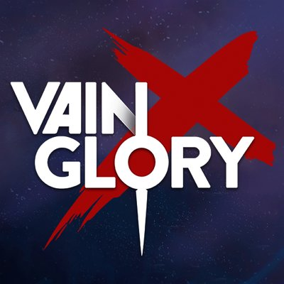
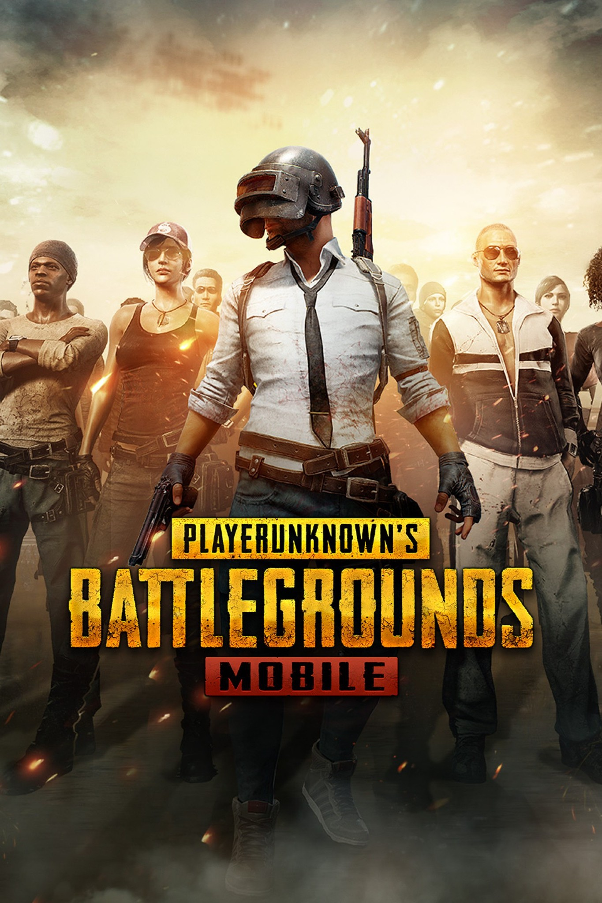
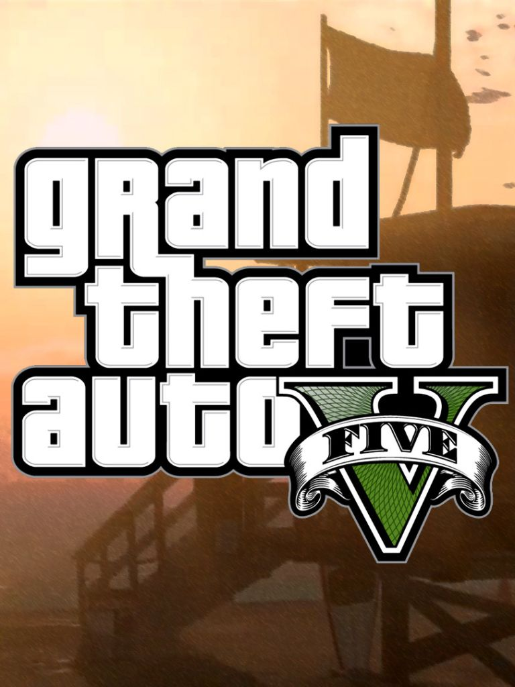
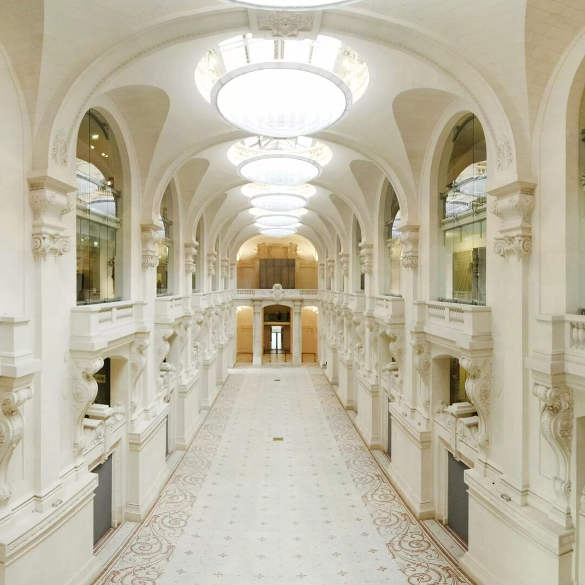
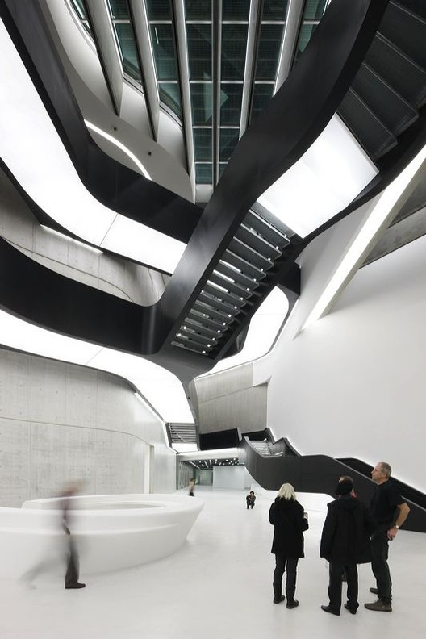
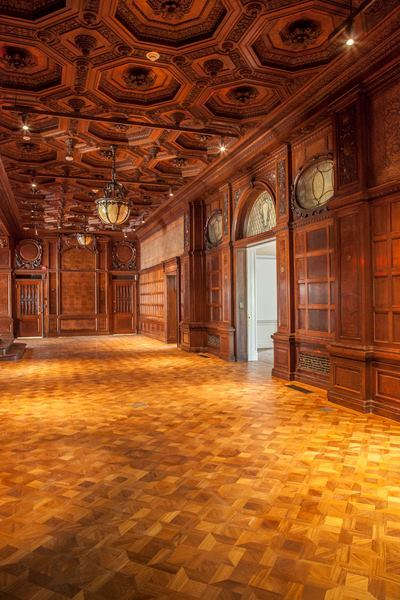
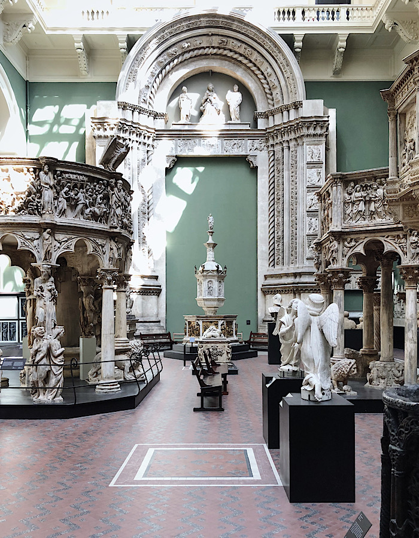
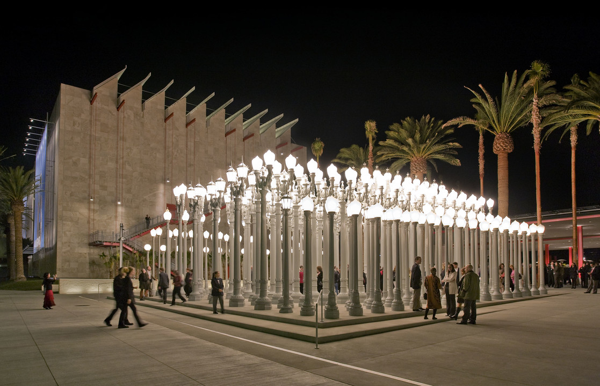

TOP 5 FAVORITE VIDEO GAMES
-
VAINGLORY

"Vainglory is a free-to-play video game with in-game purchases, developed and published by Super Evil Megacorp for iOS, Android and PC. The game is a version of the MOBA genre wherein two opposing teams of three or five players fight to destroy the enemy by controlling the path between the bases, which is lined by turrets and guarded by AI-controlled enemy creatures. This video game reminds me of my teenager time back in Cambodia.There were alot of memory of me and my friends played this video game everyday
-
PUBG MOBILE

"PlayerUnknown's Battlegrounds (PUBG) is an online multiplayer battle royale game developed and published by PUBG Corporation, a subsidiary of South Korean video game company Bluehole. The game is based on previous mods that were created by Brendan "PlayerUnknown" Greene for other games, inspired by the 2000 Japanese film Battle Royale, and expanded into a standalone game under Greene's creative direction. In the game, up to one hundred players parachute onto an island and scavenge for weapons. This game is the first game that I play when I move to the U.S. It was a great game that I enjoy playing to avoid from society because I have no friends here.
-
GRAND THEFT AUTO V

"Grand Theft Auto V is a 2013 action-adventure game developed by Rockstar North and published by Rockstar Games. It is the first main entry in the Grand Theft Auto series since 2008's Grand Theft Auto IV. Set within the fictional state of San Andreas, based on Southern California, the single-player story follows three protagonists—retired bank robber Michael De Santa, street gangster Franklin Clinton, and drug dealer and arms smuggler Trevor Philips—and their efforts to commit heists while under pressure from a corrupt government agency and powerful criminals. This game is the first game that I play on my first PC that I build by myself. It was a great experience that I have ever had.
-
GOD OF WAR

"God of War is a mythology-based action-adventure video game franchise. Created by David Jaffe at Sony's Santa Monica Studio, the series debuted in 2005 on the PlayStation 2 (PS2) video game console, and has become a flagship title for the PlayStation brand, consisting of eight games across multiple platforms. Based in ancient mythology, the story follows Kratos, a Spartan warrior who was tricked into killing his family by his former master, the Greek God of War Ares. This game is the first game that I play on my first console that I bought by myself. It was a great experience that I have ever had.
-
VALORANT

"Valorant is a free-to-play multiplayer tactical first-person shooter developed and published by Riot Games, for Microsoft Windows. First teased under the codename Project A in October 2019, the game began a closed beta period with limited access on April 7, 2020, followed by official release on June 2, 2020. Valorant is a team-based tactical shooter and first-person shooter set in the near future. Players play as one of a set of agents, characters designed based on several countries and cultures around the world. In the main game mode, players are assigned to either the attacking or defending team with each team having five players on it. Agents have unique abilities and use an economic system to purchase their abilities and weapons.
TOP 5 DREAM CITIES TO VISIT
-
PARIS

Paris is truly a dream destination for designers. The Musée des Arts Décoratifs inspires with its blend of historic and modern designs, while the Marais District’s boutique shops and galleries spark creativity. I’d lose hours at the Centre Pompidou, soaking in contemporary art, and hunting for unique vintage treasures at the Saint-Ouen Flea Market. A peaceful walk through the Tuileries Garden would be perfect for sketching or reflecting. Plus, the Palais de Tokyo’s contemporary exhibitions would be the cherry on top. Everywhere you go, Paris seems to weave history and design effortlessly.
-
ROME

Rome is an endless source of inspiration for me as a designer. The MAXXI Museum’s modern art and architecture push the boundaries of creativity, while spots like Gard Galeria bring art and design together in fresh ways. Wandering through Torre Argentina Square connects me to its timeless urban design, and Tiber Art along the river celebrates artistic expression beautifully. The way Rome merges ancient history with modern innovation feels like a constant reminder of design’s evolving impact.
-
New York

New York is a dream destination for a designer like me. The Cooper Hewitt Smithsonian Design Museum is a must-see for its inspiring exhibits, while the High Line offers a beautiful mix of urban design and nature. Exploring SoHo’s art galleries and design stores feels like a treasure hunt, and the Museum of Modern Art (MoMA) always pushes creative boundaries. Even just walking through neighborhoods like DUMBO in Brooklyn, with its industrial charm and creative spaces, sparks so many ideas."
-
London

London is a design lover’s paradise. The Victoria and Albert Museum is a treasure trove of art and design history, while the Design Museum’s contemporary exhibits always inspire. The city’s street art scene, especially in Shoreditch, is a vibrant mix of creativity and culture. I’d love to explore the Tate Modern’s modern art collection and take a stroll through the Royal Parks for a breath of fresh air. London’s design scene is a perfect blend of tradition and innovation.
-
Los Angeles

Los Angeles is a city that’s always buzzing with creative energy. The Los Angeles County Museum of Art (LACMA) is a must-visit for its diverse art collections, while the Getty Center’s architecture and gardens are a work of art in themselves. Exploring the Arts District’s murals and galleries feels like stepping into a living canvas, and the Broad Museum’s contemporary art collection is always thought-provoking. The city’s mix of design, culture, and nature is a constant source of inspiration.